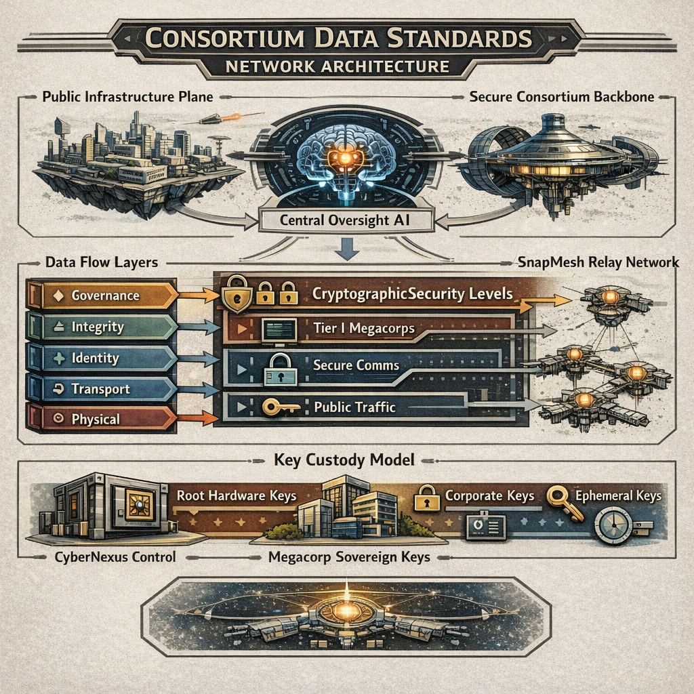

Consortium Data Standards
Encyclopaedia Entry - Data Governance and Cryptographic Framework

The Consortium Data Standards (CDS) define the mandatory technical and cryptographic framework governing all packetised data transmission across infrastructure administered by Consortium and operated centrally by CyberNexus or its licensed subsidiaries.
CDS applies to:
- Public interstellar communications infrastructure
- The Secure Consortium Backbone (SCB), physically air-gapped from public systems
- The restricted SnapMesh relay network
Although operational control resides with CyberNexus, CDS compliance is mandatory for all accredited megacorporations and licensed entities operating within Consortium space.
Governance and Operational Oversight
CyberNexus maintains a centralised AI oversight system embedded within the routing and governance layer of the network.
The system:
- Has access to all packet metadata
- May access encrypted payloads where cryptographic authority permits
- Maintains compliance audit records
- Monitors for downgrade attempts, routing anomalies, and accreditation violations
While the AI possesses access-level visibility across infrastructure, it does not possess sufficient processing capacity to analyse all traffic in real time. Instead, it operates on prioritised heuristics, anomaly scoring, and triggered inspection models.
This structural asymmetry—total access but finite analysis—has become a defining feature of Consortium-era data governance.
Infrastructure Planes
Public Infrastructure Plane (PIP)
Open to accredited entities and regulated civil traffic. Encryption requirements vary by classification level.
Secure Consortium Backbone (SCB)
Physically air-gapped from the public plane. Restricted to Tier I and Tier II megacorporate traffic and strategic communications. Level II encryption is mandatory; Level III is required for strategic data.
SnapMesh Relay Network (SRN)
An independent, synchronised jump-based relay mesh. Access is limited to registered corporations. Accreditation reflects industrial output, political standing, and historical compliance. SnapMesh nodes interface with CyberNexus governance systems but operate on discrete relay cycles.
Packet Architecture
All CDS-compliant packets include the following components:
- Header: Origin Authority Identifier (OAI), Accreditation Tier, Cipher Level Declaration, Timestamp (Consortium Standard Time), and Routing Intent Flags
- Payload: Encrypted or plaintext data, as permitted by the applicable classification level
- Integrity Footer: Hash commitment, Signature block, and Governance trace token
All packets generate immutable compliance commitments recorded within CyberNexus audit systems.
Cryptographic Architecture
CDS cryptography is structured in hierarchical layers. These layers define encryption strength, key custody, and access authority.
Base Hardware Cryptographic Layer (Level 0)
At the foundation of all CDS infrastructure is a small set of Consortium Root Keys embedded in certified hardware.
Characteristics:
- Installed at manufacture
- Not electronically transmitted
- Updated only via ultra-secure physical storage
- Delivered by authorised couriers under military-grade escort
- Stored in tamper-resistant hardware modules
These keys authenticate infrastructure nodes, enable secure firmware validation, and anchor trust across both public and secure planes. CyberNexus maintains custody of root key generation but does not distribute them electronically under any circumstances.
Compromise of Level 0 keys is considered an existential infrastructure event.
Level I – Integrity and Identity Layer
Mandatory across all infrastructure. Provides cryptographic hashing of packet contents, digital signature validation of origin identity, anti-downgrade protections, and replay prevention.
Level I does not require payload encryption on public infrastructure, but signatures are compulsory for all identity-bearing transmissions. CyberNexus AI has automatic visibility of metadata and, where unencrypted, payloads.
Level II – Corporate Confidentiality Layer
Required for sensitive corporate traffic, all Secure Backbone communications, and high-tier SnapMesh transmissions. Provides end-to-end encryption, forward secrecy, compartmentalised session keys, and hardware-backed key storage.
Megacorporations may generate and manage their own private encryption keys at Level II. These private keys are not automatically escrowed to CyberNexus, remain sovereign to the issuing corporation, and are subject only to accreditation-based inspection triggers. CyberNexus can observe metadata and routing behaviour but cannot decrypt payloads protected by sovereign corporate keys without cooperation.
Level III – Strategic Sovereign Encryption
Restricted to Tier I megacorporations and select Tier II entities. Adds multi-layer encryption envelopes, hardware-bound key derivation, multi-party decryption quorum systems, temporal access constraints (notably for SnapMesh), and air-gapped key custody enforcement.
Level III traffic may employ dual-control decryption requirements, delayed-release cryptographic locks, and SnapMesh jump-synchronised encryption windows. Even CyberNexus does not possess unilateral decryption capability for properly constituted Level III sovereign keys.
However, CyberNexus retains authority over root hardware validation, node certification, and infrastructure-level key revocation.
SnapMesh Cryptographic Constraints
SnapMesh transmissions occur during tightly synchronised relay windows. Security characteristics include:
- Pre-committed cryptographic exchange parameters
- Jump-window-bound session keys
- Single-cycle validity enforcement
- Relay authentication anchored to Level 0 hardware keys
Missed synchronisation may invalidate encryption contexts and require re-authentication on subsequent relay cycles. Because SnapMesh access is restricted to accredited corporations, access is influenced by industrial scale, political alignment, strategic contribution, and compliance history.
Key Custody Model
CDS operates under a hybrid sovereignty model in which infrastructure trust and corporate confidentiality are deliberately separated:
| Key Type | Custodian | Electronic Transmission |
|---|---|---|
| Root Hardware Keys | CyberNexus | Never |
| Infrastructure Node Keys | CyberNexus | Restricted |
| Corporate Private Keys | Issuing Corporation | Permitted internally |
| Session Keys | Derived per transmission | Ephemeral |
This separation ensures centralised control of infrastructure integrity alongside decentralised control of corporate confidentiality.
Monitoring and Inspection
The CyberNexus AI oversight system sees all metadata, can access unencrypted payloads, may inspect encrypted payloads where corporate keys permit, and operates heuristic prioritisation for anomaly detection.
Inspection escalation may occur upon accreditation breach, downgrade attempt, routing irregularity, or political sanction. However, bulk real-time decryption of all traffic is computationally infeasible at current processing limits.
Security Model Characteristics
CDS embodies a layered philosophy combining hardware-rooted trust, sovereign corporate confidentiality, centralised oversight authority, and politically tiered access control.
This structure has been described as both a robust interoperability regime and a mechanism for industrial control.
Criticism
Common criticisms of the CDS framework include:
- Concentration of root cryptographic authority within CyberNexus
- Political leverage over SnapMesh access
- Governance trace logging across all traffic
- Asymmetry between infrastructure control and corporate autonomy
Independent outposts and non-aligned entities have occasionally argued that CDS encodes political hierarchy directly into technical architecture.
See Also
- CyberNexus
- Consortium
- SnapMesh Relay Network
- Consortium Technical Directorate